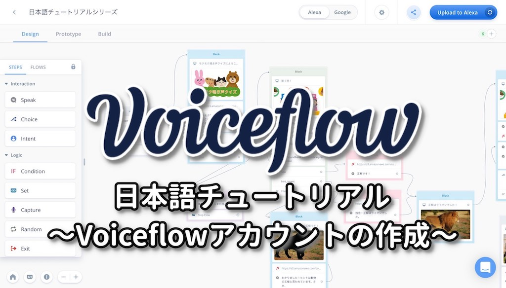
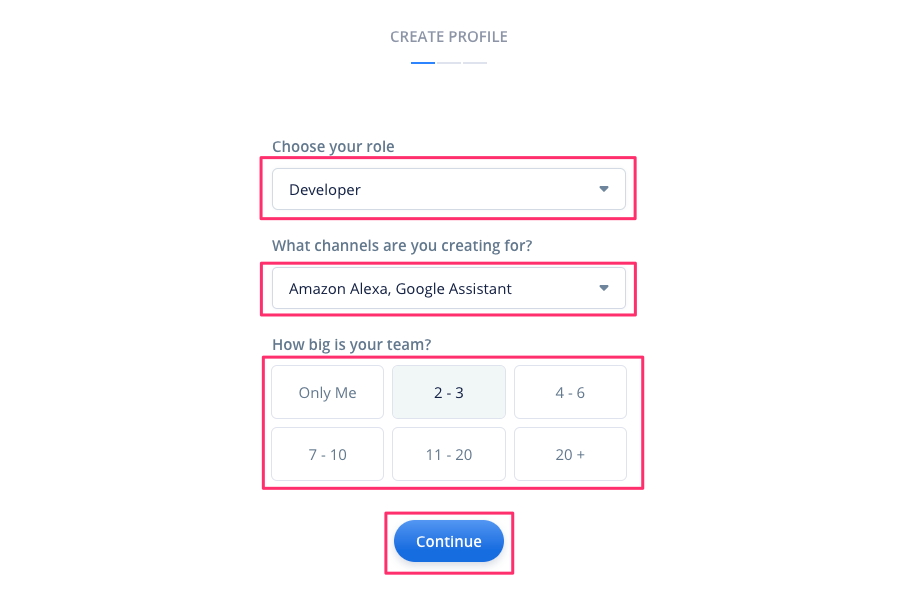
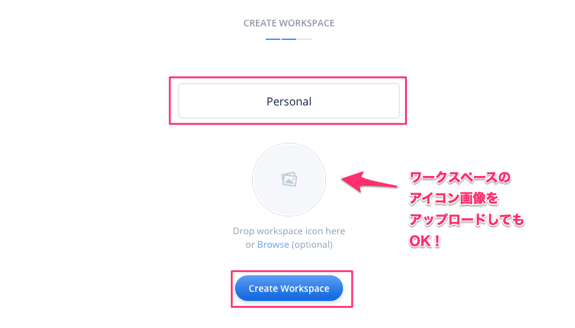

Voiceflowを使ったノンコーディングではじめるAlexaスキル開発の日本語チュートリアルシリーズです。
第0回は「Voiceflowアカウントの作成」です。VoiceflowでAlexaスキル開発を始めるために必要なアカウント作成の手順について説明します。
注意
更新履歴
- 2019/11/21 公開
- 2020/04/22 最新化
- 2020/06/09 最新化
ではNextをクリックしてください
VoiceflowでAlexaスキル開発を行うには、以下の3つのアカウントが必要になります。
- Amazon.co.jpアカウント
- Amazon開発者アカウント
- Voiceflowアカウント
1と2については本資料では説明しませんが、以下の手順をご確認の上、ご準備ください。なお、非常にハマりやすいポイントが多々ありますので、ご注意ください。
- 失敗しないAlexa開発者アカウントの作り方
https://dev.classmethod.jp/voice-assistant/how-to-safety-create-alexa-developers-account/
注意すべき点を以下に記載します。
1. Amazon.co.jpアカウント
Amazon.co.jpで普段のお買い物等でお使いいただいているアカウントがあればそれで結構です。そのアカウントでAmazon Echoを購入・使用されている場合は実機でも確認できますし、Amazon Echoがなくてもシミュレータでテストはできますので安心してください。（※ただし、Amazon Echoでしかテストできない機能もあります。）
もしお持ちでない場合は、上記手順を参考にアカウントを作成してください。
2. Amazon開発者アカウント
多分ここがまだの方という方が多いと思います。Amazon.co.jpアカウントを作成した、もしくはすでにお持ちの場合は、最初にご紹介した「失敗しないAlexa開発者アカウントの作り方」の"Amazon Developerアカウントの登録"を参考に開発者登録を行ってください。
これでAmazon側のアカウントの準備は完了です。続けて、Voiceflowアカウントを作成しましょう。
Voiceflowアカウントの作成
https://voiceflow.com/にアクセスします。Voiceflowアカウントを持っていない方は、"Sign up"をクリックしてアカウントを作成しましょう。
※すでにアカウントを持っている方は、これ以降の作業は不要です。"Sign in"をクリックしてログインし、次の章に進みましょう。

名前、メールアドレス、パスワードを入力して、"Create Account"をクリックします。メールアドレスはamazon.co.jpアカウントと同じにしておくとわかりやすいかと思います。
最初にかんたんなアンケートがありますので、順に答えていきましょう。なお、どれを選択したとしてもVoiceflowの利用に基本的に影響はありませんので安心してください。"Get Started"をクリックして進めます。

Voiceflowをどういうふうに使うのかを聞いてくるので、適当に選んでください。選んだら、"Continue"をクリックします。
- "Choose your role"
- あなたの立場です。開発者やデザイナーなどから選んでください。
- "What Channels are you connecting for?"
- Voiceflowで作りたいプラットフォームです。AlexaやGoogleなどから選んでください。
- "How big is your team?"
- チームメンバーの数を入力します。個人であれば"Only Me"でよいでしょう。

ワークスペースの名前です。あとから変更もできますのでなんでもよいです。個人であれば"Personal"と入力すればよいでしょう。"Continue"をクリックします。

コラボレーション機能を使って共同でスキルを作ることもできます。ここで一緒にスキル開発を行いたい人のメールアドレスを入力すると招待されます。あとから追加もできますので、"Skip for now"をクリックします。

この画面が表示されればアカウント作成は完了です！"Show me around"をクリックするとかんたんに説明してくれるようですが、ここでは"No Thanks"をクリックします。

これがVoiceflowの操作画面になります。画面の説明についてはこのあとのハンズオンの中で行います。ちなみにアカウント作成の直後は"My First Project" という最初のプロジェクトが開いた状態になっていますが、これは使いません。左上の"＜"をクリックします。

プロジェクトの一覧画面が表示されます。Voiceflowでは、Alexaスキルを「プロジェクト」という単位で管理します。右の列にあるのがさきほど開いていた、アカウント作成時に自動作成される「My First Project」ですね。
このチュートリアルシリーズでは、この一覧画面でプロジェクトの新規作成から行いますので、このプロジェクトは使用しません。プロジェクトを作成するとこの画面に一覧表示される、ということを覚えておいていただければ結構です。

これで準備が整いました。ではチュートリアルをお楽しみに！